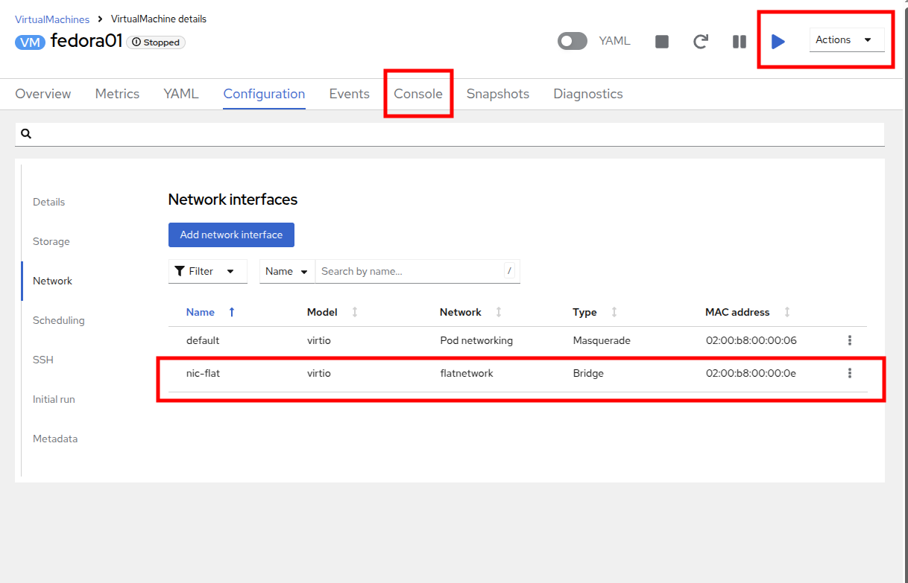

仮想マシンのネットワーク管理
はじめに
前節で述べたように、すべての仮想マシンはデフォルトで OpenShift ソフトウェア定義ネットワーク（SDN）に接続されており、これにより、OpenShift クラスター上の他のワークロード（他の仮想マシンや OpenShift ネイティブアプリケーションを含む）からのアクセスが可能になり、仮想マシンとそれらがホストするアプリケーションをより近代的なワークフローで管理できるようになります。
-
SDN は、クラスタ内で VM または Pod としてデプロイされたアプリケーションを、制御された方法で抽象化、接続、公開するための追加機能を提供します。これには、OpenShift の Service および Route 機能が含まれます。
-
OpenShift のネットワークポリシーエンジンにより、VM のユーザーまたは管理者は、個々の VM またはプロジェクト/ネームスペース全体に対するネットワークトラフィックを許可または拒否するルールを作成することができます。
しかし、必要に応じて仮想マシンをタグなしネットワークや VLAN などの 1 つ以上の物理ネットワークに直接接続することも可能です。これは SDN に加えて行われるもので、例えば、管理者は外部 IP アドレスから VM に接続でき、VM はレイヤー2 ネットワークを使用して直接接続できます。
これは、Linux ブリッジなどのホストネットワークの設定によって行われます。このラボのセクションでは、VM がそのブリッジに接続し、物理ネットワークに直接接続できるようにするためのNetwork Attachment Definitionを作成する手順を説明します。
| このロードショーで提供されるOpenShift環境は、仮想マシンが接続する各コンピュートノードにLinuxブリッジがすでに設定されており、外部ネットワークリソースとの接続が容易です。 |
環境の確認
Kubernetes NMState Operator は、NMState を使用して OpenShift Container Platform クラスタのノード全体でステート駆動型のネットワーク構成を実行するための Kubernetes API を提供します。 Kubernetes NMState Operator は、クラスタノード上のさまざまなネットワークインターフェースタイプ、DNS、ルーティングを構成するための機能を提供します。さらに、クラスターノード上のデーモンが、各ノードのネットワークインターフェースの状態を定期的にAPIサーバーに報告します。
-
左側のメニューで Networking をクリックし、次に NodeNetworkState をクリックして現在の構成を確認します。
-
前述の通り、ワーカーノードにはこのモジュールで使用するためにすでにLinuxブリッジが構成されていることがわかります。ワーカーの1つを展開し、ブリッジ br-flat をクリックして、その詳細情報を表示します。
-
隅にある「X」をクリックしてブリッジの詳細を閉じます。 br-flat と名付けられたこのブリッジは、Kubernetes NMState Operator を使用して作成されました。 さらに詳しく調べるには、左側のメニューで NodeNetworkConfigurationPolicy をクリックします。
-
br-flat を選択して情報を取得します。
NodeNetworkConfigurationPolicy はノードレベルで構成を実行するため、現在のユーザーアカウントでこれらのオプションを変更することはできません。そのため、管理者に問い合わせるよう求められます。 -
このブリッジがどのように作成されたかを確認するには、YAML に切り替えて定義を確認します。管理者として、以下の yaml スニペットを使用して同様のブリッジを作成できます。
Network Attachment Definitionの作成
VMでLinuxブリッジを使用するには、Network Attachment Definition を作成する必要があります。これは、OpenShiftにネットワークを通知し、仮想マシンがネットワークに接続できるようにするものです。Network Attachment Definitionはプロジェクトに紐づいており、そのプロジェクトにデプロイされた仮想マシンだけがアクセスできます。 Network Attachment Definitionがデフォルトのプロジェクトに作成された場合、グローバルに利用可能になります。 これにより、管理者は、VMを管理するアクセス権を持つ特定のユーザーに対して、どのネットワークを利用可能にするか、または利用不可能にするかを制御することができます。
| Network Attachment Definitionは、既存のネットワークデバイスを利用するようにOpenShiftに指示します。この例では、そのデバイスは以前に作成されており、br-flat という名前が付けられています。この名前を使用する必要があります。OpenShiftは、その名前のネットワークデバイスが接続されているノードのみを利用できるため、VMを任意のコンピュートノードに配置できなくなります。 |
-
左側のメニューから Network、Network Attachment Definition の順に選択し、Create Network Attachment Definition ボタンをクリックします。

Network Attachment Definitionを作成する際には、vmexamples-{user}プロジェクト内であることを確認してください。 -
vmexamples-{user} プロジェクト用のフォームを以下のように入力し、Create Network Attachment Definition をクリックします。
-
Name: flatnetwork
-
Network Type: Linux Bridge
-
Bridge name: br-flat
上記のフォームには、VLAN タグ番号を入力するフィールドがあります。これは、VLAN タグの割り当てが必要なネットワークに接続する場合に使用します。このラボでは、タグなしネットワークを使用しているため、VLAN 番号は必要ありません。 ホスト上の単一のLinuxブリッジには、多くの異なるVLANを関連付けることができます。このシナリオでは、個々のNetwork Attachment Definitionを作成するだけでよく、個別のホストインターフェースやブリッジを作成する必要はありません。
-
-
Network Attachment Definitionの詳細を確認します。これは vmexamples-{user} プロジェクトで作成されたため、他のプロジェクトでは利用できません。
仮想マシンをネットワークに接続
-
左側のメニューで VirtualMachines に移動し、中央の列から fedora01 VM を選択します。 Configuration タブをクリックし、左側の Network タブをクリックします。

-
ネットワークインターフェースの追加 をクリックし、表示されるフォームに必要事項を入力して、保存 をクリックします。

これは外部ネットワークに接続するブリッジであるため、ネットワークを使用する仮想マシン用のマスカレード（NAT）など、アクセスを有効にするためにOpenShiftの機能や能力に頼る必要はありません。そのため、ここでは Type は Bridge であるべきです。 -
アクション メニューまたは Start ボタンを使用してVMを起動し、コンソール タブに切り替えて起動を確認します。
enp2s0 インターフェースは、flatnetwork（192.168.64.0/18）からIPアドレスを取得します。このネットワークには、IPアドレスを提供するDHCPサーバーが存在します。

-
fedora02 VMを同じ flatnetwork ネットワークにアタッチするために、同じ手順を繰り返します。
-
コンソールで ping コマンドを使用して、2つのVM（fedora01とfedora02）間の直接通信を実演します。

User Defined Network
User Defined Network（UDN）の実装前は、OpenShift Container Platform用のOVN-Kubernetes CNIプラグインはプライマリまたはメインネットワーク上のレイヤー3トポロジーのみをサポートしていました。Kubernetesの設計原則により、すべてのPodはメインネットワークに接続され、すべてのPodはIPアドレスを使用して相互に通信し、Pod間のトラフィックはネットワークポリシーに従って制限されます。新しいネットワークアーキテクチャを学ぶことは、多くの従来の仮想化管理者からしばしば表明される懸念事項です。
UDNの導入により、カスタムのレイヤ2、レイヤ3、ローカルネットのネットワークセグメントが有効になり、KubernetesのPod Networkのデフォルトのレイヤ3トポロジーの柔軟性とセグメント化機能が向上します。これらのセグメントは、デフォルトのOVN-Kubernetes CNIプラグインを使用するコンテナPodや仮想マシンに対して、プライマリまたはセカンダリネットワークとして機能します。UDNは、幅広いネットワークアーキテクチャとトポロジーを可能にし、ネットワークの柔軟性、セキュリティ、およびパフォーマンスを向上させます。
クラスタ管理者は、ClusterUserDefinedNetworkカスタムリソース（CR）を活用することで、UDNを使用してクラスタレベルで複数のネームスペースにまたがる追加のネットワークを作成および定義できます。さらに、クラスタ管理者またはクラスタユーザーは、UserDefinedNetwork CRを使用して、ネームスペースレベルで追加のネットワークを定義するためにUDNを使用できます。
User Defined Networkには、以下の利点があります。
セキュリティ強化のためのネットワーク分離 - ネームスペースは、テナントが Red Hat OpenStack Platform (RHOSP) で分離されるのと同様に、独自の分離されたプライマリネットワークを持つことができます。これにより、テナント間のトラフィックのリスクが低減され、セキュリティが向上します。
ネットワークの柔軟性 - クラスター管理者は、プライマリネットワークをレイヤー2またはレイヤー3のネットワークタイプとして構成できます。これにより、プライマリネットワークにセカンダリネットワークの柔軟性が提供されます。
簡素化されたネットワーク管理 - User Defined Networkにより、異なるネットワークでワークロードをグループ化することで分離が実現できるため、複雑なネットワークポリシーの必要性がなくなります。
高度な機能 - User Defined Networkにより、管理者は複数のネームスペースを単一のネットワークに接続したり、異なるネームスペースのセットごとに個別のネットワークを作成したりすることができます。 また、ユーザーは異なるネームスペースやクラスターにまたがって IP サブネットを指定し、再利用することもでき、一貫したネットワーク環境を提供します。
OpenShift VirtualizationによるUser Defined Network
OpenShift Container Platform のウェブコンソールまたは CLI を使用して、仮想マシン（VM）のプライマリインターフェイス上のUser Defined Network（UDN）に仮想マシンを接続することができます。プライマリUser Defined Networkは、指定したネームスペースのデフォルトのPod Networkに置き換わります。Pod Networkとは異なり、プライマリ UDN はプロジェクトごとに定義でき、各プロジェクトは固有のサブネットとトポロジーを使用できます。
レイヤー2トポロジーでは、OVN-Kubernetesはノード間にオーバーレイネットワークを作成します。このオーバーレイネットワークを使用すると、追加の物理ネットワークインフラストラクチャを構成することなく、異なるノード上のVMを接続することができます。
レイヤー2トポロジーでは、ライブマイグレーション時に永続的なIPアドレスがクラスターノード全体で保持されるため、ネットワークアドレス変換（NAT）を必要とせずにVMのシームレスなマイグレーションが可能です。
プライマリUDNを実装する前に、以下の制限事項を考慮する必要があります。
-
virtctl ssh コマンドを使用して VM への SSH アクセスを構成することはできません。
-
oc port-forward コマンドを使用して VM へのポート転送を行うことはできません。
-
ヘッドレスサービスを使用して VM にアクセスすることはできません。
-
VM の健全性チェックを構成するためのReadinessおよびLivenessのプローブを定義することはできません。
| OpenShift Virtualization は現在、セカンダリUser Defined Networkをサポートしていません。 |
User Defined Networkの使用
UDNにアクセスできるPodを作成する前に、ネームスペースとネットワークを作成する必要があります。Podを新しいネットワークにネームスペースを割り当てることや、既存のネームスペースにUDNを作成することは、OVN-Kubernetesでは受け付けられません。
この作業はクラスタ管理者によって実行する必要があります。vmexamples-{user}-udn という名前空間を適切なラベル（k8s.ovn.org/primary-user-defined-network）とともに割り当てました
-
Network に移動し、User Defined Network をクリックして、プロジェクト vmexamples-{user}-udn が選択されていることを確認する。
-
Create をクリックし、 UserDefinedNetwork を選択します。

-
サブネット 192.168.254.0/24 を指定し、 Create をクリックします。
-
作成したUDNの設定を確認します。

-
フォームを使用して作成した場合のデフォルト名は primary-udn です。
-
デフォルトではレイヤー2です（現時点でOpenShift仮想化でサポートされている唯一のレイヤー）。
-
役割はプライマリです（仮想マシンは現時点ではプライマリネットワークのみを使用できます）。
-
Network Attachment Definitionが自動的に作成されます。
-
-
次に、左側のメニューで NetworkAttachmentDefinitions に移動し、関連するNADが自動的に作成されていることを確認します。
-
UserDefinedNetworkに接続された仮想マシンを作成するには、 YAML定義の調整 が必要です。このラボでは作業を簡単にするため、以下のYAML定義を使用し、UserDefinedNetworkに接続されたVMを作成します。
-
次の画像のように、トップメニューを使用してYAMLをインポートできます。

apiVersion: kubevirt.io/v1 kind: VirtualMachine metadata: labels: kubevirt.io/vm: fedora-udn name: fedora-udn namespace: vmexamples-{user}-udn spec: dataVolumeTemplates: - apiVersion: cdi.kubevirt.io/v1beta1 kind: DataVolume metadata: creationTimestamp: null name: fedora-udn spec: sourceRef: kind: DataSource name: fedora namespace: openshift-virtualization-os-images storage: resources: requests: storage: 30Gi runStrategy: Always template: metadata: name: fedora-udn namespace: vmexamples-{user}-udn spec: domain: devices: disks: - disk: bus: virtio name: rootdisk - disk: bus: virtio name: cloudinitdisk interfaces: - name: primary-udn binding: name: l2bridge rng: {} resources: requests: memory: 2048M networks: - pod: {} name: primary-udn terminationGracePeriodSeconds: 0 volumes: - dataVolume: name: fedora-udn name: rootdisk - cloudInitNoCloud: userData: |- #cloud-config user: fedora password: fedora chpasswd: { expire: False } name: cloudinitdisk -
貼り付けが完了したら、画面下部の青い Create ボタンをクリックしてVMの作成プロセスを開始します。

-
VirtualMachines に切り替えて、VM が作成されるのを見ます。 作成されたら、新たに作成された fedora-udn 仮想マシンを確認します。 Overview タブの Network タイルに、UserDefinedNetwork から割り当てられた IP が表示されます。
-
コンソールタブに切り替えて、提供されたゲスト認証情報を使用してVMにログインします。

-
VMは定義されたサブネットからIPを割り当てます。
-
VMはDHCPからゲートウェイ構成を自動的に取得します。
-
VMはUser Defined Networkを使用してインターネットにアクセスできます。
-